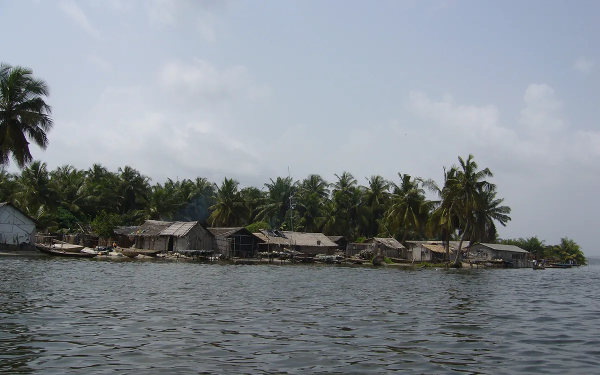

Identité
Une ONG ivoirienne à vocation internationale
Protégeons notre Littoral est une ONG associative, citoyenne, environnementale et institutionnelle, ivoirienne constituée en 2016, à vocation internationale.

Elle est engagée pour la protection, la valorisation et la gouvernance durable des espaces littoraux, marins et lagunaires.
Son ancrage est en Côte d’Ivoire. Son domaine d’intervention couvre le littoral, l’environnement marin, les lagunes, les mangroves, le climat, la biodiversité et la citoyenneté environnementale.
Son positionnement est associatif, citoyen, environnemental et institutionnel. L’ONG agit dans une logique d’intérêt général, de pédagogie, de documentation et de responsabilité collective.
Le président fondateur de l’ONG est OUAGA Bokoua Yao. Cette information est présentée comme repère institutionnel public.